Día 1 · Tokio
Llegada Tokio
Recepción en Lexus. Caminata por Imperial Palace East Gardens, primeros sakuras. Cena kaiseki en Kitcho Arashiyama Tokyo.
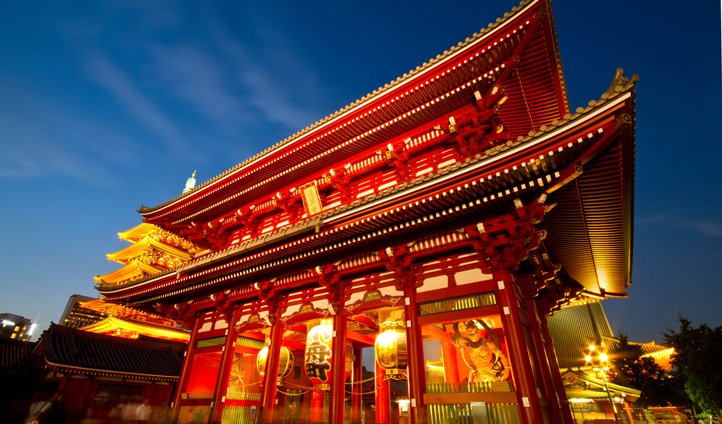
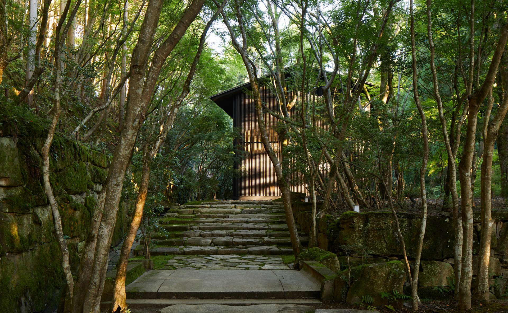
Tokio, Kioto y la Isla de Naoshima · Edición sakura marzo 2027
Ver fechas y preciosHay una palabra japonesa que no se traduce: mono no aware — la conciencia de la transitoriedad, la belleza precisamente porque algo se va a terminar. El cerezo en flor es su símbolo perfecto: cinco días de plenitud, después la lluvia rosa, después la nada. Doce días en la filosofía nipona de la impermanencia, siguiendo el frente del sakura de sur a norte mientras el archipiélago lo abre.
Cuatro Japón distintos: Tokio (la megaciudad con sus maestros de té y sushi shokunin), Hakone (una noche de ryokan con onsen y kaiseki de doce pasos), Kanazawa (la pequeña Kioto del Mar de Japón con su distrito geisha intacto desde Edo), Kioto (cuatro noches en machiya privada, con Ryōan-ji, Kikunoi 3 estrellas y sesión de zazen), y Naoshima (dos noches en Benesse House — el museo donde se duerme, las Waterlilies de Monet en sala de Tadao Ando, el Teshima Art Museum).
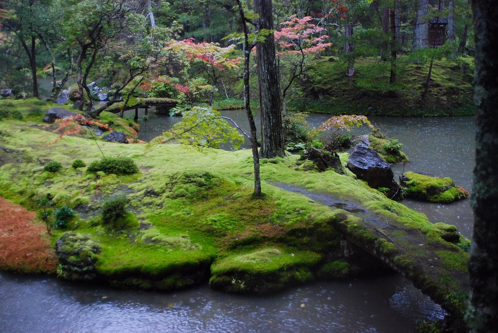
Sesión privada de 90 minutos en chashitsu tradicional, no performance — el ritual real de una de las dos escuelas de té más importantes del país.
Mesa privada con el chef Yoshihiro Murata explicando cada plato del kaiseki más respetado de Kioto.
El único hotel del mundo donde dormís dentro de un museo. Tadao Ando, las Waterlilies de Monet, y el Teshima Art Museum de Ryue Nishizawa.
Recepción en Lexus. Caminata por Imperial Palace East Gardens, primeros sakuras. Cena kaiseki en Kitcho Arashiyama Tokyo.

Mañana en Asakusa (Senso-ji + río Sumida). Tarde en Roppongi: 21_21 Design Sight (Tadao Ando) + Mori Art Museum.
Ceremonia del té privada con maestro Urasenke en chashitsu de Aoyama. Tarde: cena privada de sushi shokunin (1 Michelin, 8 cubiertos). Cierre en TeamLab Planets Toyosu.
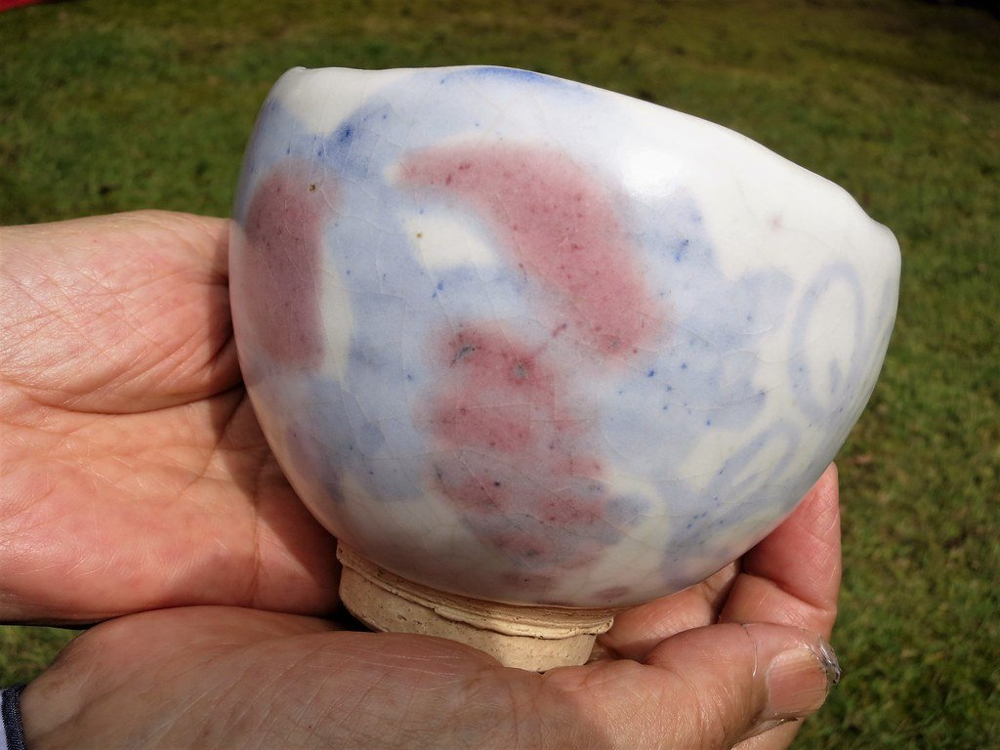
Mercado Toyosu opcional con experto. Shinkansen a Odawara. Onsen privado y público en Gora Kadan. Kaiseki de doce pasos en habitación. Vista Fuji al ocaso.
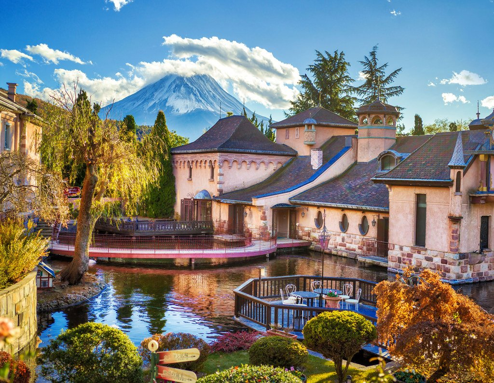
Hakone Open Air Museum (sala Picasso). Shinkansen Hakone-Tokio-Kanazawa en Green Car. Llegada al ocaso.
Kenrokuen Garden con especialista. Distrito Higashi Chaya. Taller de pan de oro. Encuentro privado con maiko en chaya histórica. Cena en Tsubajin.
21st Century Museum (SANAA). Shinkansen a Kioto. Check-in machiya buyout. Cena en kappo de Pontocho.
Hanami al amanecer en Camino del Filósofo. Ginkaku-ji. Shojin ryori en Tenryū-ji Arashiyama. Bambú. Cena en Kikunoi 3* con chef Murata.
Zazen en Shunkō-in. Ryōan-ji jardín de piedra. Maestro ceramista de Kiyomizu + maestro kintsugi. Fushimi Inari al ocaso.
Shinkansen a Okayama, ferry a Naoshima. Check-in Benesse House Park. Tarde en Chichu Art Museum (las Waterlilies de Monet en sala Ando).
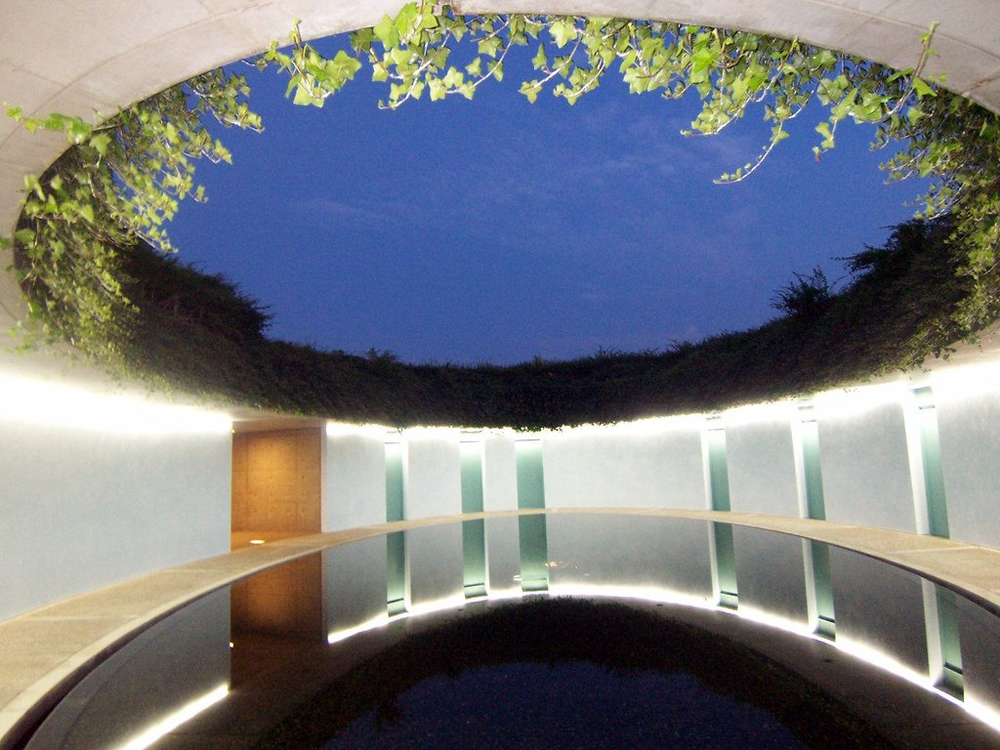
Lee Ufan Museum (Ando). Art House Project (Honmura). Ferry a Teshima, Teshima Art Museum de Ryue Nishizawa. Cena de despedida.
Ferry, tren a Osaka KIX. Vuelos internacionales.
Sumá días al final del viaje, con salidas privadas.
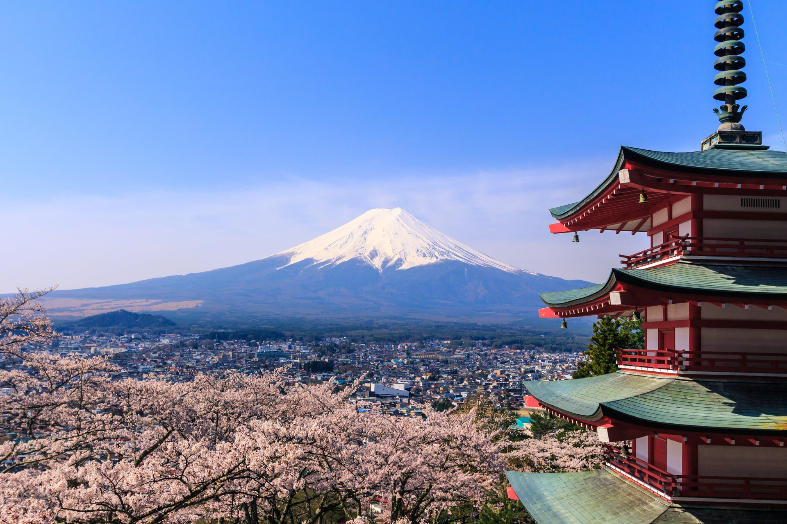
Cambio de estación si querés combinar con febrero — Niseko snow, Sapporo, Furano.
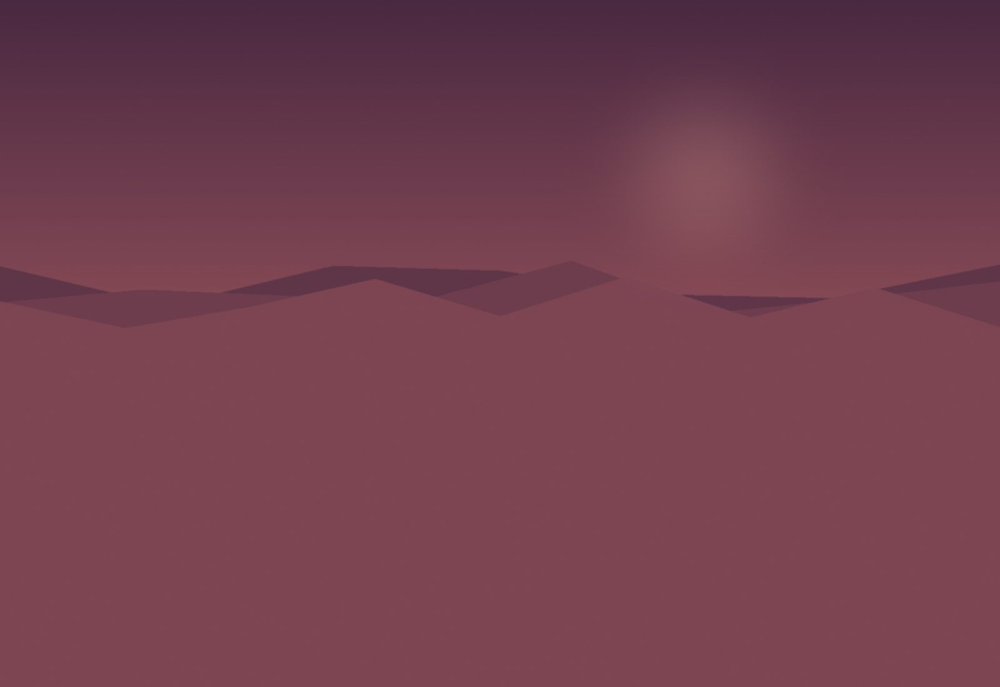
El tren insignia de Asia, vagón de cedro y obras de arte, por Kagoshima y Yakushima.
Dos días más en Tokio para los foodies — Tsukiji exterior, Shibuya, Harajuku con experto.
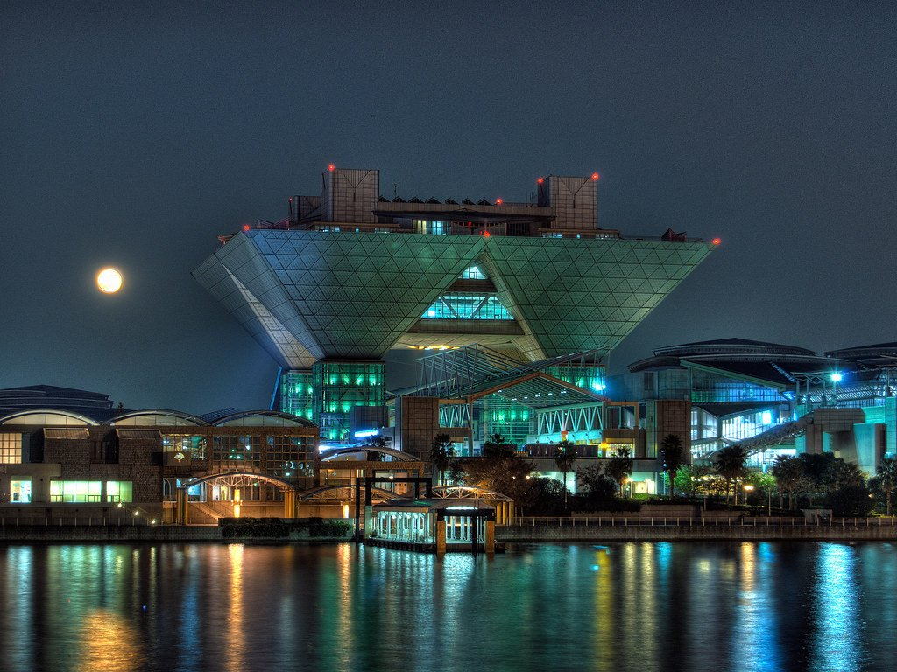
Otemachi (ryokan contemporáneo con baño termal en azotea)
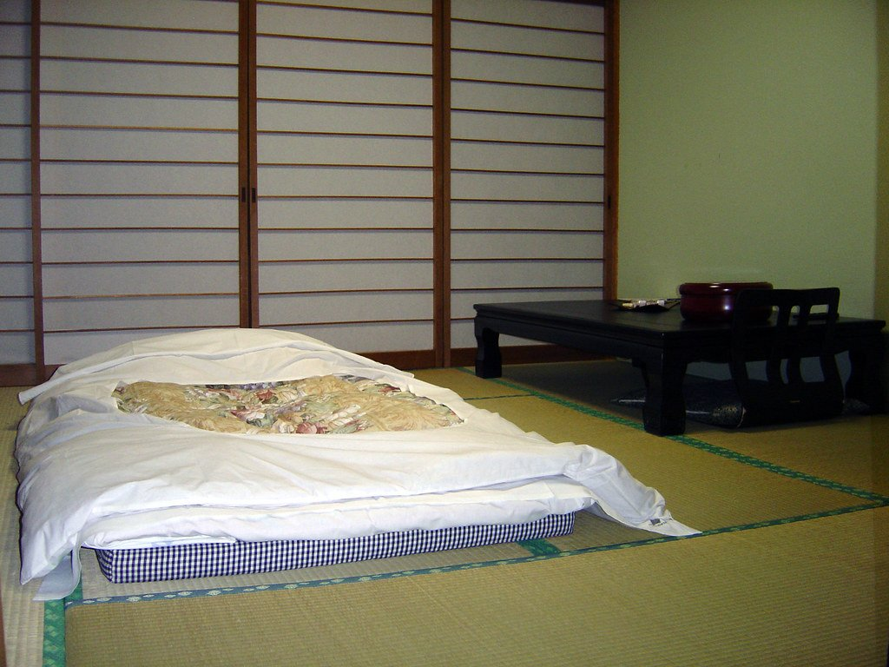
Hakone (antigua villa imperial Meiji, 8 habitaciones)
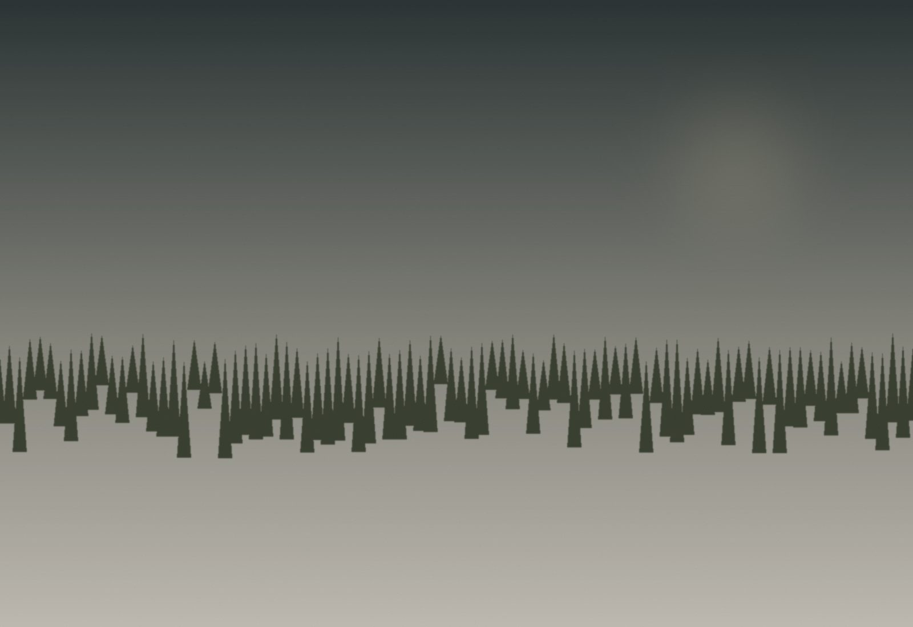
Kanazawa (ryokan boutique, baño termal propio)
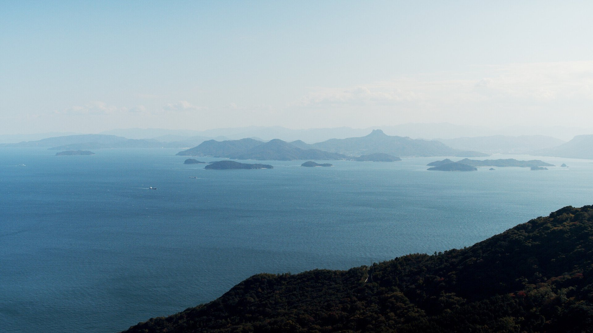
Naoshima (Tadao Ando — hotel-museo)
| Salida | Disponibilidad | Precio desde | |
|---|---|---|---|
| 22 mar 2027 | Abierta | $11,000 | Reservar → |
| 27 mar 2027 | Pocas plazas | $11,000 | Reservar → |
| 1 abr 2027 | Abierta | $11,000 | Reservar → |
| 5 abr 2027 | Lista de espera | $11,000 | Reservar → |
| 10 abr 2027 | Abierta | $10,500 | Reservar → |
Precios por persona en habitación doble. Suplemento de habitación individual a consultar.